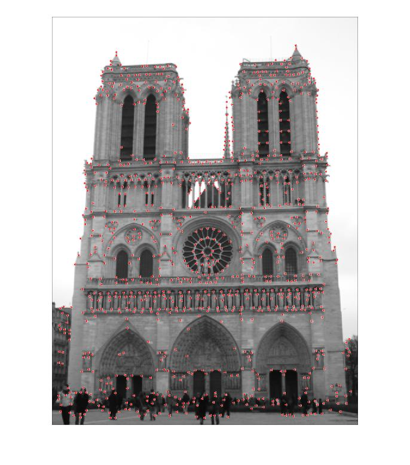
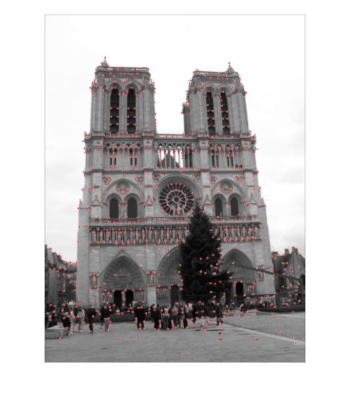
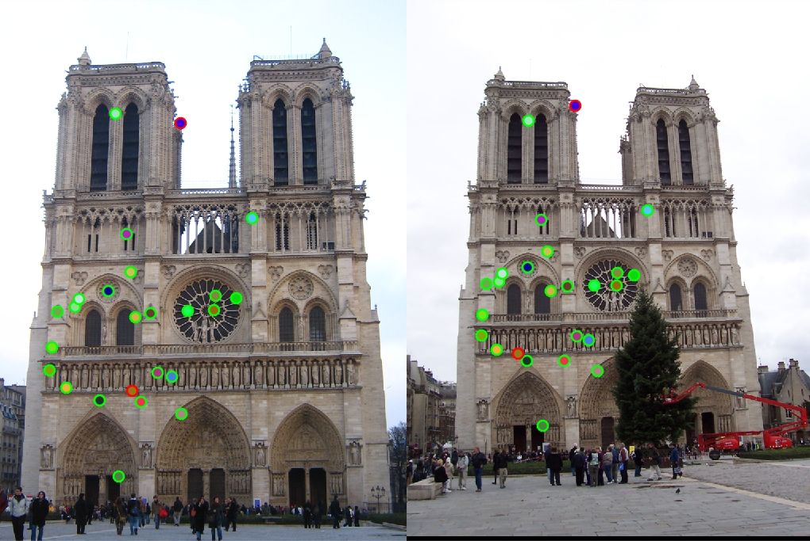
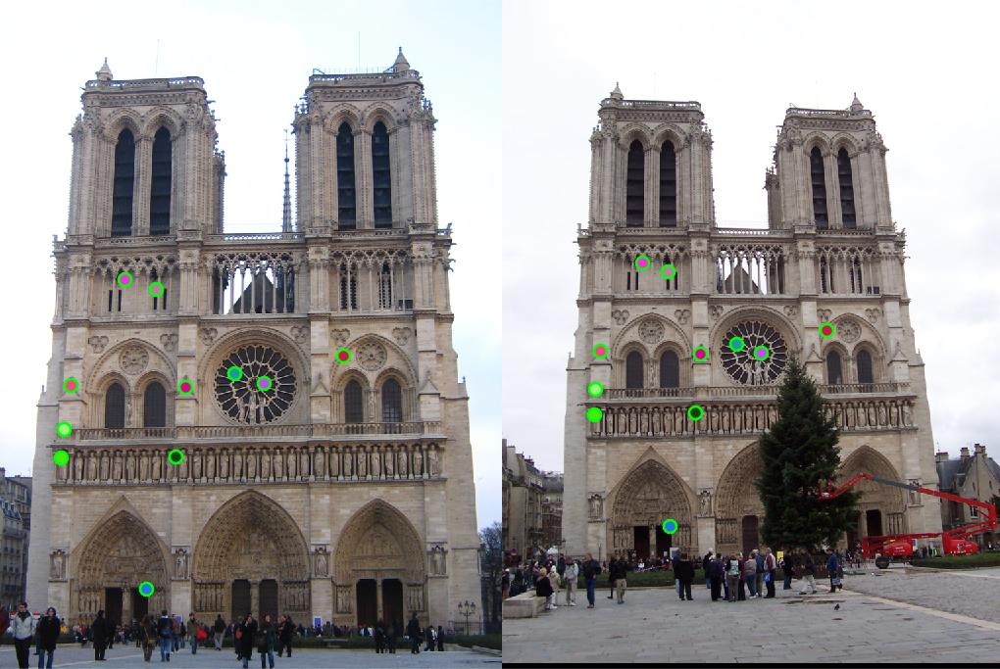
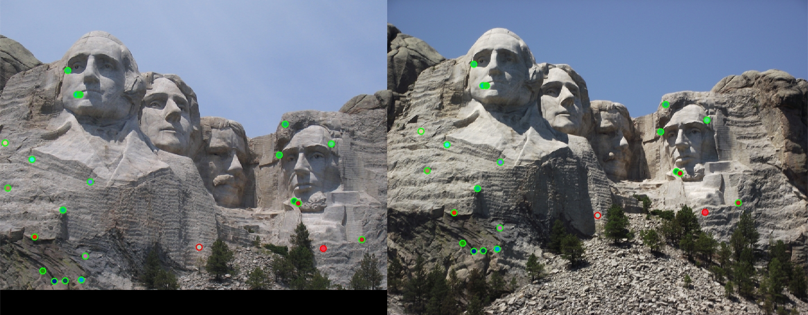

This page is a project report for an implementation of the SIFT feature matching pipeline which is used to match distinct "features" of one image of an object to the same "features" in a different image of the same object. The algorithm does this in three seperate stages.
The rest of the report will go over each of the stages in the pipeline in detail and provide the results obtained using the provided notre_dame sample images.
This implementation uses the Harris corner detector to to find potential points of interest in the images. The Harris corner detector operates on the principle of "cornerness" of a localized section of the image. Harris defines a pixel beaing a corner if gradients arond the image show change in both the X and Y directions around pixel. A naive implementation of this would need a sliding window in X and Y at each pixel and would be incredibly slow. An approximation of the above operation can be performed with just image derivatives and by computing a Moment matrix and thresholding values in that moment matrix.
In my implementation I threshold the values in the moment matrix at 0.0005, values greater than that are considered corners. I then perform local non-maximal supression by silding a window across the image and supressing all values that are not maximal in the window. I also blur the image initally with a gaussian to reduce the effect of noise. The red dots in the images below visualize the corners in the image.
 I have implemented a slightly modified modified version of the standard SIFT descriptor that does not take into account the orientation at each feature. Each descriptor is computed as follows:
[ 0 pi/4 pi/2 3*pi/4 pi 5*pi/4 3*pi/2 7*pi/4 2*pi] - (pi/8) as bins to create a histogram for each 4x4 subwindow within the 16x16 window.I use the simple ratio rest implementation to match features, with the threshold set 0.85 ofr the ration between the eulidean distances. Provides decent results for the provided notre dame image pair. 22 good matches and 2 mismatches.
I performed some minor tweaks to improve the algorithms' accuracy, I later switched out the oriented sobels used to compute the derivates Matlab's inbuilt gradirnt() function and also lowered my threshold for feature matching to 0.82.
notre_dame now has 11 good matches with 0 bad matches
Rushmore, though shows 2 incoreect matches, on closer inspection actually reveals the two mismatches to be correct
